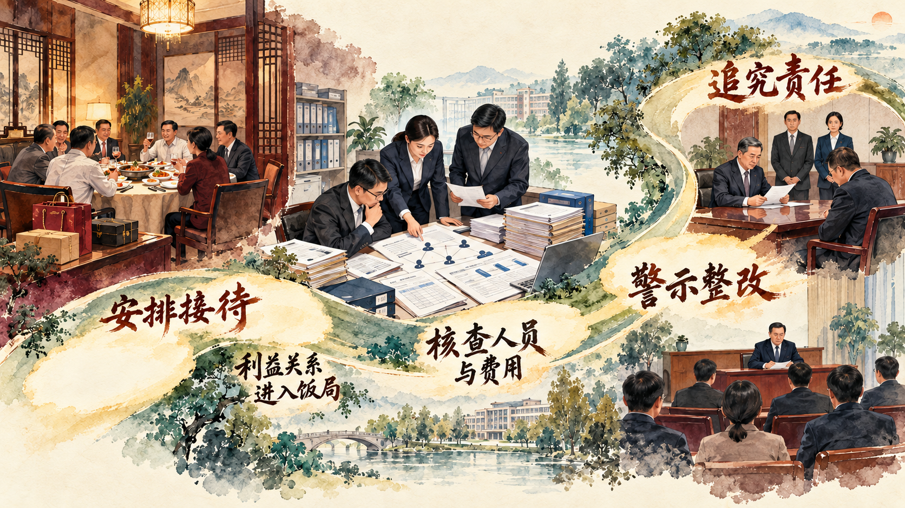

一个政党为什么要始终把目光投向自身
本节回答全面从严治党从何而来、为什么必须长期坚持。理解“全面”，要看到管党治党覆盖党的建设各领域、各方面和各级组织；理解“严”，要看到真管真严、敢管敢严、长管长严；理解“治”，要看到责任、制度、监督和执行共同构成治理过程。
一、打铁必须自身硬
中国共产党肩负领导中国式现代化建设的重大任务。党的领导能力、组织状态和作风形象，直接影响路线方针政策能否落实，也影响人民对党的信任。事业发展提出的新任务越复杂，党越需要及时发现自身问题、提高领导水平和执政能力。
“打铁必须自身硬”把使命与自身建设连接起来。党要团结带领人民进行伟大社会革命，就要以勇于自我革命的精神锻造自己。政治方向是否坚定、理想信念是否牢固、组织体系是否有力、干部作风是否过硬、权力运行是否规范，都属于“自身硬”的具体内容。
二、坚定不移全面从严治党
全面从严治党是新时代党的自我革命的伟大实践。它以加强党的长期执政能力建设、先进性和纯洁性建设为主线，以党的政治建设为统领，以坚定理想信念宗旨为根基，系统推进党的各项建设，把制度建设贯穿其中，深入推进反腐败斗争。
全面从严治党也是一套责任体系。各级党委承担主体责任，纪委承担监督责任，党委书记履行第一责任人责任，班子成员履行“一岗双责”。发现问题以后，还要沿着组织管理、教育监督、制度执行和领导责任继续追查，使管党治党从个人要求进入组织运行。
案例研究｜一顿饭为什么会越过作风红线：黄梅县违规聚餐事件中的责任链
2025 年清明假期，一场以祭祖返乡和老同事聚会为背景的饭局，把私人交往、管理服务关系、违规宴请和组织责任连在了一起。4 月 4 日，曾在湖北省黄梅县任职、时任成都市金牛区副区长的张建返回湖北老家。与其工作地区有关联的一家国有企业负责人安排接待人员租车，并携带酒烟提供服务。张建随后联系原同事，商定第二天聚餐。
4 月 5 日中午，多名现任或曾任当地干部参加聚餐。谁提出聚会、谁安排车辆和酒烟、谁通知人员、谁支付餐费，看起来是分散的小动作，合在一起便构成一条完整的组织链。酒水由企业接待人员带来，餐费由接待人员和一名退休干部支付。参与者的身份、费用来源和相互关系，使这顿饭进入“可能影响公正执行公务的宴请”范畴。饭局结束后，一名参与聚餐的干部死亡，事件随即进入组织调查。
调查没有停留在“有没有花公款”这个单一问题上。核查人员需要重建饭局形成的全过程：返乡干部与接待企业之间存在什么联系，企业为什么派人提供车辆和酒烟，在职干部参加聚餐前是否了解付款安排，企业负责人是否可能在项目、经营或管理事项上寻求帮助。手机联系记录、车辆安排、付款凭证和人员证言被放到同一条时间线上，私人聚会背后的管理服务关系由此显现。
调查还发现了第二条责任链。有关人员在向上报告情况时隐瞒关键参与者身份，删去聚餐人数，模糊费用由谁支付；报告经过有关负责人同意后逐级上报。信息每少一项，组织判断就更难接近事实。原本发生在餐桌上的作风问题，随后延伸为信息报告失实和管党治党责任问题。公开通报对参加者、组织者、提供宴请者以及履行主体责任和监督责任不到位的人员分别处理。

这个案例帮助我们理解，作风建设关注具体行为背后的权力关系。判断一顿饭是否越过纪律边界，需要核对参与者关系、组织安排、费用来源、管理服务事项和事后报告。责任调查沿着“饭局怎样形成、利益关系怎样进入、情况怎样上报、组织责任怎样落实”逐层展开，把直接行为责任、领导责任和监督责任放在同一治理链条中。
讨论题
- 如果聚餐费用没有使用公款，为什么仍需核对付款人与参加者之间的管理服务关系？
- 事后报告删去人数、身份和付款信息，会对组织判断产生什么影响？
- 从直接参加饭局到履行主体责任和监督责任，为什么需要区分不同层次的责任？
资料来源：中央层面深入贯彻中央八项规定精神学习教育工作专班、中央纪委办公厅《公开通报 2 起党员干部违规吃喝严重违反中央八项规定精神典型问题》，2025 年 6 月。
三、全面从严治党取得历史性开创性成就
新时代全面从严治党从制定和落实中央八项规定开局破题，以钉钉子精神纠治“四风”，把纪律和规矩挺在前面，推动巡视监督、派驻监督和国家监察体制改革，形成发现问题、严明纪法、整改治理相贯通的工作格局。管党治党由宽松软走向严紧硬，党在革命性锻造中更加坚强有力。
这些成就体现在制度与政治生态的共同变化中。党员干部的纪律意识和规矩意识得到强化，党内政治生活更加严肃，监督覆盖持续拓展，反腐败斗争取得压倒性胜利并全面巩固。成就同时提出新的要求：全面从严治党永远在路上，已经形成的制度和成果需要在执行中持续巩固。